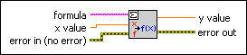

Eval Single-Variable Scalar VI
Owning Palette: 1D & 2D Evaluation VIs
Requires: Full Development System
Calculates exactly one function value of a given 1D function y = f(x), where f is the function specified by the user formula.

 Add to the block diagram Add to the block diagram |
 Find on the palette Find on the palette |